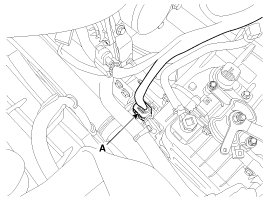
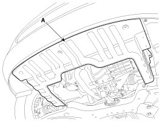
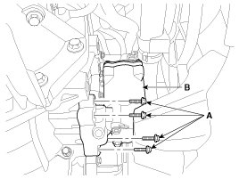
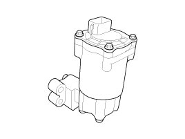

Electric Oil Pump - With ISG (Idle Stop & Go) System
Removal
1. Disconnect the negative (-) battery terminal.
2. Disconnect the Electric Oil Pump (EOP) connector (A).

3. Remove the under cover (A) after lifting the vehicle with lift.

4. Remove the Electric Oil Pump (B) after removing the bolts (A-4ea).
Tightening torque:
19.6 - 25.5 N.m (2.0 - 2.6 kgf.m, 14.4 - 18.8 lb-ft)


Installation
1. Install in the reverse of removal.